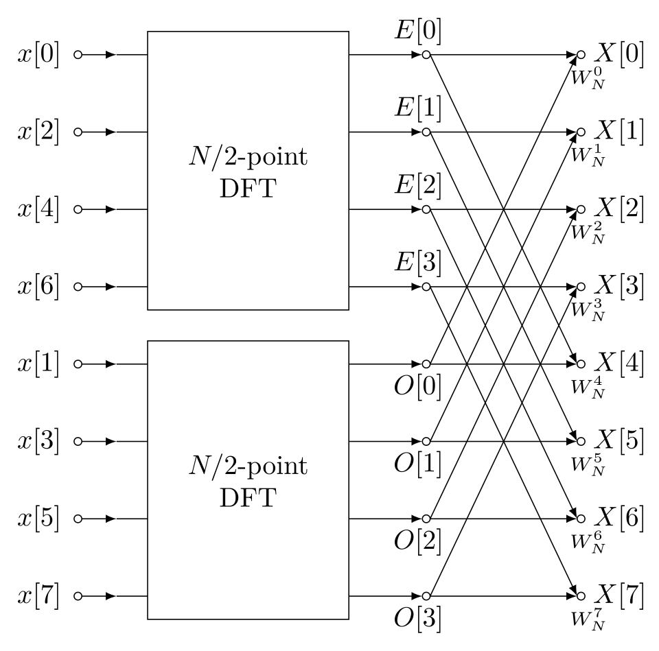

MAY 1, 2025
Journal Entry - Spring 2025
This semester was much of the same as last fall, balancing coursework with typical life responsibilities. My biggest struggle this past spring was definitely managing a heavier course load, although I greatly enjoyed the content covered. Signals and Systems was a VERY informative course, and I got to meet Dr. Koppal, whose lab I am interested in joining. I enjoyed the math behind digital signal processing, although I would probably find analog filtering more interesting. My CURE course was interesting, though Industrial Engineering is definitely not my cup of tea.
